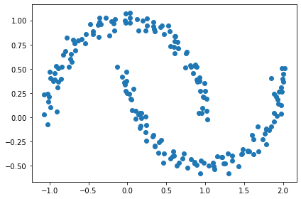
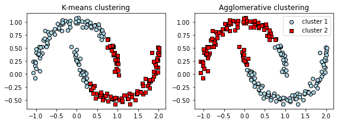
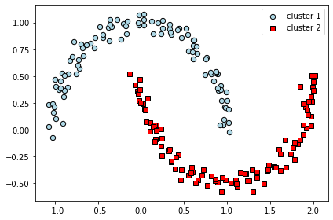

DBSCAN¶
(Density-based spatial clustering of application with noise，密度為基礎的空間集群法)
解釋:
1.核心點(Core Point):在指定半徑內，至少包含N個相鄰點
2.邊緣點(Border Point): 在核心點半境內，以邊緣點為中心，同樣半徑內，只包含小於n個相鄰點
3.雜訊點(Noise Point):非核心點，也非邊緣點
參考圖片

題目:¶
建立上下弦月資料後，分別使用kmeans、hierarchical、DBSCAN進行分類，並檢驗其效果
步驟一: 建立亂數資料集¶
from sklearn.datasets import make_moons
import matplotlib.pyplot as plt
#取得亂數資料，其圖形為上下弦月
X, y = make_moons(n_samples=200, noise=0.05, random_state=0)
plt.scatter(X[:, 0], X[:, 1])
plt.tight_layout()
#plt.savefig('images/11_14.png', dpi=300)
plt.show()

步驟二: 使用kmeans與hierarchical進行分類¶
from sklearn.cluster import AgglomerativeClustering
from sklearn.cluster import KMeans
f, (ax1, ax2) = plt.subplots(1, 2, figsize=(8, 3))
km = KMeans(n_clusters=2, random_state=0)
y_km = km.fit_predict(X)
ax1.scatter(X[y_km == 0, 0], X[y_km == 0, 1],
edgecolor='black',
c='lightblue', marker='o', s=40, label='cluster 1')
ax1.scatter(X[y_km == 1, 0], X[y_km == 1, 1],
edgecolor='black',
c='red', marker='s', s=40, label='cluster 2')
ax1.set_title('K-means clustering')
ac = AgglomerativeClustering(n_clusters=2,
affinity='euclidean',
linkage='complete')
y_ac = ac.fit_predict(X)
ax2.scatter(X[y_ac == 0, 0], X[y_ac == 0, 1], c='lightblue',
edgecolor='black',
marker='o', s=40, label='cluster 1')
ax2.scatter(X[y_ac == 1, 0], X[y_ac == 1, 1], c='red',
edgecolor='black',
marker='s', s=40, label='cluster 2')
ax2.set_title('Agglomerative clustering')
plt.legend()
plt.tight_layout()
# plt.savefig('images/11_15.png', dpi=300)
plt.show()

三、使用DBSCAN進行分類¶
採用sklearn.cluster.DBSCAN，參數說明如下:
eps:設定半徑
min_samples:設定指定半徑內至少含幾個點
metric:距離演算法
from sklearn.cluster import DBSCAN
db = DBSCAN(eps=0.3, min_samples=5, metric='euclidean')
y_db = db.fit_predict(X)
#繪圖
plt.scatter(X[y_db == 0, 0], X[y_db == 0, 1],
c='lightblue', marker='o', s=40,
edgecolor='black',
label='cluster 1')
plt.scatter(X[y_db == 1, 0], X[y_db == 1, 1],
c='red', marker='s', s=40,
edgecolor='black',
label='cluster 2')
plt.legend()
plt.tight_layout()
#plt.savefig('images/11_16.png', dpi=300)
plt.show()
